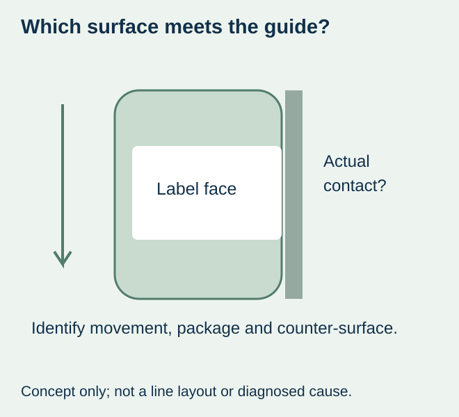
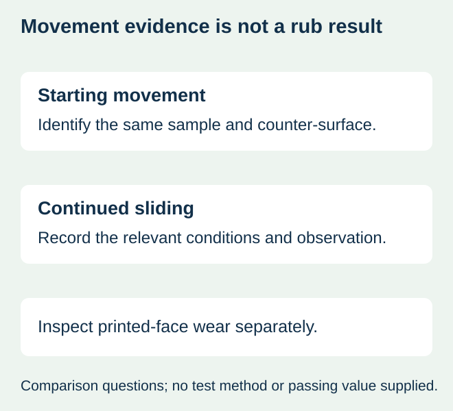

A jar moves differently past a packing guide after its label finish changes. The label is still attached and the printed surface shows little visible damage. Purchasing requests a tougher laminate, but the reported symptom concerns movement against an external contact, not simply resistance to wear.
Confirm whether the guide actually meets the label face, then specify the relevant surface-friction question separately from scuff resistance. If the guide contacts bare glass or another part of the pack, changing the label finish may address the wrong interface. If it contacts the label, compare the actual finished surfaces and operating context before choosing a replacement.


Locate the contact before buying a surface change
Ask the equipment owner to identify the actual contact location and the stage at which the observation occurs. Keep a package photo or approved drawing showing the label region and counter-surface. A nearby guide is not proof that it caused the event, and a photograph alone cannot reconstruct the contact history.
Record whether the label moves relative to the jar, whether the whole jar behaves differently, or whether the label face is being damaged. The shear-versus-peel guide concerns the bond beneath the label. This guide concerns the outside surface meeting another material. The interfaces should not be combined under one phrase such as strong glue.
Starting movement, continued sliding and visible wear are different observations
| Question | Evidence to seek on the actual proposal | Do not substitute |
|---|---|---|
| What happens as movement begins? | A relevant starting-friction comparison with identified surfaces and conditions | A peel-strength value for the jar adhesive |
| What happens while surfaces slide? | A relevant continued-movement comparison or approved line observation | An unspecified first-movement result |
| Does the printed face wear? | A separate abrasion observation on the relevant print/finish | An assumption that low drag guarantees no scuffing |
| Does the label move on the jar? | Evidence for the package bond and actual loading | A coating description for the external face |


Ask what a friction report actually represents
ASTM’s public D1894 scope describes starting and sliding friction of plastic film and sheeting against itself or another substance under specified conditions. Its public explanation also notes that time-dependent surface effects can matter when comparing samples. A qualified provider must determine relevance to the proposed label and counter-surface; the method title is not proof of a finished jar’s line performance.
Keep the sample construction, counter-material, method, conditioning and reported property identifiable. A value for film against itself is not automatically a value against the actual packing guide. Likewise, a flat specimen does not silently become a complete reproduction of a curved, filled package. Request interpretation where the comparison does not represent the real contact.
No universal coefficient, finish ranking or machine setting is provided here. The purchasing specification should state the intended outcome and the evidence agreed with the responsible technical parties, rather than assign a number copied from another packaging application.
Compare actual alternatives under the same relevant contact
For a hypothetical condiment line, a matte-coated sample and a laminated sample might both preserve the printed image while their movement observations differ. That would support reviewing the actual surface pair and trial record; it would not prove that all matte coatings drag or that all laminates slide better.
If a finish change is proposed, identify the full construction and what else changes. If the packing arrangement changes, document that alternative and its actual work or cost. Compare only confirmed proposals. A different guide or package arrangement may need the equipment owner’s review, while a new finish still needs relevant print, application and handling evidence.
Keep dry and wet conditions distinct where both occur. Identify the sample age and actual handling history rather than describe one fresh sample and one stored sample as an isolated finish comparison. Changing several inputs may produce a workable combination without identifying a single cause; retain that boundary in the conclusion.
Approve movement and durability as separate requirements
Use the rub-comparison guide where visible damage is the unresolved requirement, and the finish-scope guide to name the surface actually supplied. A report about one property should not be relabeled as evidence for another.
The order decision should identify the accepted finish, relevant package/contact arrangement and the observations it represents. If those conditions remain unknown, seek an answerable comparison before paying for a vaguely specified upgrade. This site does not promise a low-friction grade, a testing service or a correction to a packing line without project confirmation.
Discuss the unresolved label requirement
Send the actual food pack, label construction/finish, observed contact surface and movement stage, relevant dry/wet condition and an existing comparison if available. Ask which finish and package-contact evidence can be reviewed for the real job. Review the food-label product scope and prepare a label specification inquiry. The contact page opens an email draft and lists email or WhatsApp for attachments. Supply, proof options, testing, pricing and timing require project confirmation.